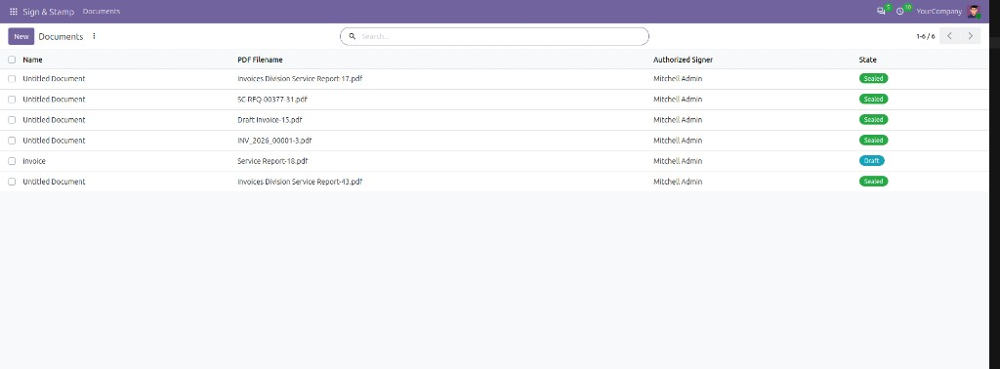
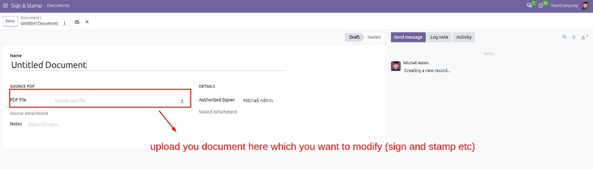
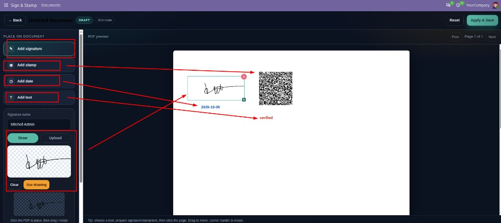

1. Main page — Documents
Manage all Sign & Stamp records from one list. Track each PDF, the authorized signer, and whether the document is still in Draft or already Sealed.


Sign & Stamp is a Community OWL editor for sealing PDFs inside Odoo. Create a document, upload the PDF you want to modify, prepare a drawn or uploaded signature, add a stamp, date or custom text, then place items with click, drag and resize before saving a sealed PDF attachment.
Manage all Sign & Stamp records from one list. Track each PDF, the authorized signer, and whether the document is still in Draft or already Sealed.
Upload your document here which you want to modify (sign and stamp etc). Use the PDF File field on the document form, save the record, then click Open Editor to place signatures, stamps, dates and text.

Use the full-screen editor tools to prepare and place overlays on the PDF preview. Drawn signatures keep a transparent background. Text and dates support selectable color and size. Drag to move, use the corner handle to resize, then Apply & Save to seal.

Install these packages on the Odoo server:
pip3 install -U pymupdf pypdf reportlab Pillow --break-system-packages
Author: Muhammad Awais
Compatible with Odoo 20 Community